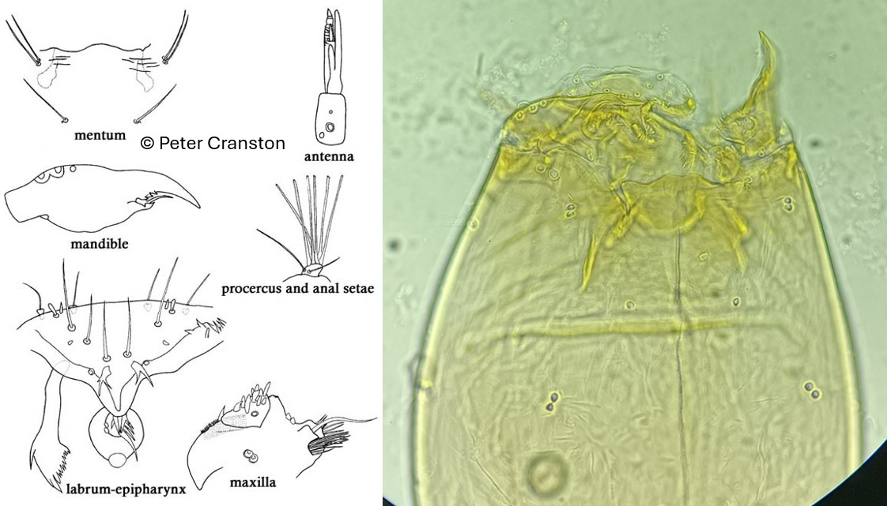

Potthastia groupe longimana (Meigen, 1838)

Mentum
Mentum sans dents, sans plaques ventromentales
Mandibules
Dent apicale beaucoup plus longue que la largeur combinée des 3 dents internes.
Labre
SI, SII et SIII simples. Peigne de l’épipharynx composé de 3 écailles longues et pointues. Prémandibules élargies apicalement avec 15 fines dents pointues.
Ecologie
Deux espèces (P. gaedii et P. montium) sont inféodées aux eaux vives alors que l’espèce P. Longimanus est rencontrée dans les lacs. Au moins 5 espèces sont présentes, toutes dans l'Holarctique.
Espèces recensées en France
4 :P. gaedii, P. longimanus, P. montium, P. pastoris.